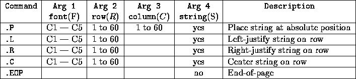

| Postscript |
The year is 1976 and a small upstart company has just invented the first (albeit crude) laser postscript printer. They have hired you to write Release 1 of the the postscript printer's device driver. Release 1 is very limited (with only two very limited fonts) since some nay- sayers in the industry believe that postscript printers will never take off.
The device driver reads in a series of commands which describe positions of text characters on the output page. (Graphics will be in release 2.) Each page is a 60 x 60 grid of characters. Each grid position can contain only the following characters: ABCDEFGHIJKLMNOPQRSTUVWXYZ .*
The alphabetic characters above and the blank comprise the character set of the first font (C1). The asterisk ( * ) is the base character from which the enlarged courier font (C5) is created. Each C5 character is defined on a 5 (rows) 6 (columns) grid which contains either *'s or periods (.). The C5 font characters are as follows.
.***.. ****.. .****. ****.. *****. *****. .****. *...*. *****.
*...*. *...*. *...*. *...*. *..... *..... *..... *...*. ..*...
*****. ****.. *..... *...*. ***... ***... *..**. *****. ..*...
*...*. *...*. *..... *...*. *..... *..... *...*. *...*. ..*...
*...*. ****.. .****. ****.. *****. *..... .***.. *...*. *****.
A B C D E F G H I
..***. *...*. *..... *...*. *...*. .***.. ****.. .***.. ****..
...*.. *..*.. *..... **.**. **..*. *...*. *...*. *...*. *...*.
...*.. ***... *..... *.*.*. *.*.*. *...*. ****.. *...*. ****..
*..*.. *..*.. *..... *...*. *..**. *...*. *..... *..**. *..*..
.**... *...*. *****. *...*. *...*. .***.. *..... .****. *...*.
J K L M N O P Q R
.****. *****. *...*. *...*. *...*. *...*. *...*. *****. ......
*..... *.*.*. *...*. *...*. *...*. .*.*.. .*.*.. ...*.. ......
.***.. ..*... *...*. .*.*.. *.*.*. ..*... ..*... ..*... ......
....*. ..*... *...*. .*.*.. **.**. .*.*.. ..*... .*.... ......
****.. .***.. .***.. ..*... *...*. *...*. ..*... *****. ......
S T U V W X Y Z blank
Note that the sixth column of each character contains only periods. This is to define a natural spacing useful in strings.
Your device driver is to read formatting commands from an input stream and format characters from fonts C1 and C5 onto a grid which initially contains periods in every grid postion (a blank piece of paper). Each format command may cause the contents of any of the cell positions to change with possible overrides to cell postions. Note that blanks from either font and empty cell positions (containing periods) from the C5 font do not overwrite the contents of cells. It is also possible that the commands cause formatting that would be placed off of either side or the bottom; such formatting is simply truncated. Formatting continues until an end-of-page command is reached.
The input stream consists of a series of lines each containing exactly one command and its argument(s). Each command begins in column 1 with a period and is followed by 0 to 4 arguments. Possible input commands to your device driver are as follows.

All commands start in column 1 of the input line and arguments (if any) will be separated by at least one space. Each command will have exactly the arguments as prescribed in the above table. (Input ranges/values will be adhered to and there will be no extraneous or missing arguments.)
Argument 1 indicates the font to be used in the command. Argument 2
indicates the row (R) in which text is to be placed. If the font is
C5, then text will be placed in rows R through R+4. Argument 3 (if
included) indicates the leftmost position of a string. Argument 4 is a
string of up to 60 valid characters (upper case letters or space if font is C5, or any printable character if font is C1)
delimited by the `|'.
Input to your program will consist of a series of commands and their arguments (exactly 1 per line). You are to start with a ``blank" piece of paper and read the input file formatting and flushing paper until end of file.
With each ``.EOP" command, you are to output the grid representing the current format of the page. In order to denote the end of page for the judges, you are to follow each outputted page with a blank line, a line of 60 dashes ( `-' ), and another blank line.
.C C5 3 |ACM| .C C1 10 |SOUTH CENTRAL REGION PROBLEM FOUR SAMPLE OUTPUT| .C C5 20 |OVERFLOW CENTERED LARGE FONT| .C C5 30 |CENTERED| .P C1 33 11 |LINE THAT OVERWRITES THROUGH CENTERED| .L C1 40 |SMALL FONT LINE IS LEFT JUSTIFIED ON ROW FORTY| .R C5 50 |RIGHT| .P C5 57 10 |BOTTOM AND RIGHT TRUNCATION| .EOP
............................................................ ............................................................ ......................***...****.*...*...................... .....................*...*.*...*.**.**...................... .....................*****.*.....*.*.*...................... .....................*...*.*.....*...*...................... .....................*...*..****.*...*...................... ............................................................ ............................................................ .......SOUTH.CENTRAL.REGION.PROBLEM.FOUR.SAMPLE.OUTPUT...... ............................................................ ............................................................ ............................................................ ............................................................ ............................................................ ............................................................ ............................................................ ............................................................ ............................................................ .****.*****.*...*.*****.*****.****..*****.****........*..... *...*.*.....**..*.*.*.*.*.....*...*.*.....*...*.......*..... *.....***...*.*.*...*...***...****..***...*...*.......*..... *.....*.....*..**...*...*.....*..*..*.....*...*.......*..... .****.*****.*...*..***..*****.*...*.*****.****........*****. ............................................................ ............................................................ ............................................................ ............................................................ ............................................................ .......****.*****.*...*.*****.*****.****..*****.****........ ......*...*.*.....**..*.*.*.*.*.....*...*.*.....*...*....... ......*.....***...*.*.*...*...***...****..***...*...*....... ......*...LINE.THAT.OVERWRITES*THROUGH.CENTERED.*...*....... .......****.*****.*...*..***..*****.*...*.*****.****........ ............................................................ ............................................................ ............................................................ ............................................................ ............................................................ SMALL.FONT.LINE.IS.LEFT.JUSTIFIED.ON.ROW.FORTY.............. ............................................................ ............................................................ ............................................................ ............................................................ ............................................................ ............................................................ ............................................................ ............................................................ ............................................................ ..............................****..*****..****.*...*.*****. ..............................*...*...*...*.....*...*.*.*.*. ..............................****....*...*..**.*****...*... ..............................*..*....*...*...*.*...*...*... ..............................*...*.*****..***..*...*..***.. ............................................................ ............................................................ .........****...***..*****.*****..***..*...*........***..*.. .........*...*.*...*.*.*.*.*.*.*.*...*.**.**.......*...*.**. .........****..*...*...*.....*...*...*.*.*.*.......*****.*.* .........*...*.*...*...*.....*...*...*.*...*.......*...*.*.. ------------------------------------------------------------